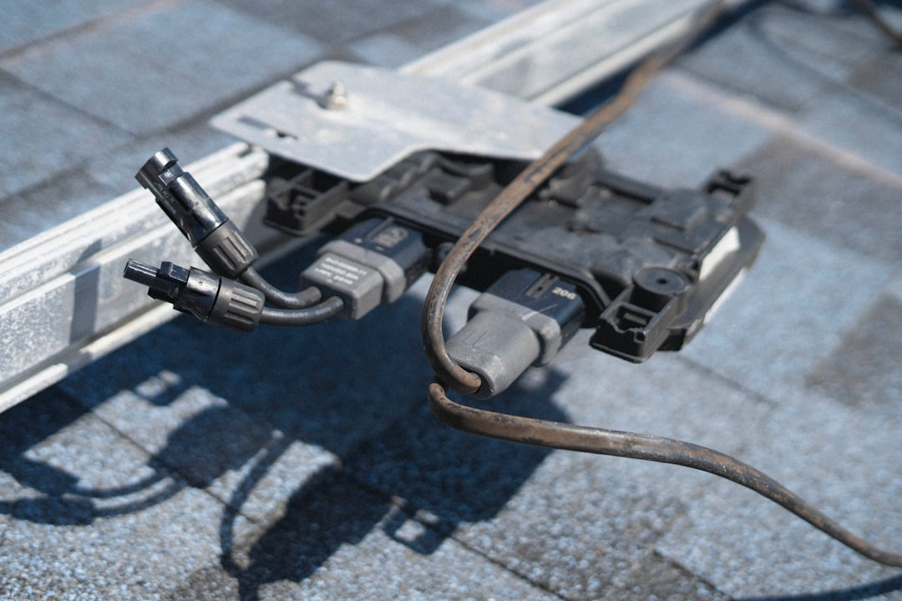

For a Tampa roof issue, start by recording the property location, visible symptoms, roof covering if known, approximate age, when the issue began, previous repairs and whether water is entering. Ask for findings that explain repair, replacement or further investigation. Before signing, verify the contracting business through Florida DBPR, confirm permit responsibility in writing and compare the same scope line by line.
For homeowners comparing roof repair tampa options, the practical question is how to turn a ceiling mark, displaced shingle or water-entry concern into a clear written scope.
Roof Repair Tampa Explained
Roof Contractor Tampa frames the first decision around the property, visible condition and water-entry details, then asks owners to compare findings before choosing repair or replacement. That order is useful for roof repair tampa because a ceiling mark, displaced shingle or ageing roof surface does not show the full assembly.
A repair enquiry should describe what can be seen without trying to diagnose the roof remotely. Useful inputs include the roof covering if known, approximate age, when the issue began, whether water is entering, previous repairs, access constraints and nearby structures. Photos can be provided later if a provider asks for them, but the written description helps each contractor start from the same facts.
The repair versus replacement question should come after the condition record. Ask what was observed at coverings, flashing, valleys and penetrations, what remains hidden, and why a repair, replacement or further investigation is being recommended. When the answer is not obvious, request both viable scopes in writing.
Who This Applies To
This guide applies to Tampa property owners trying to organise roof repair, inspection or replacement conversations before signing a contractor agreement. It is most useful where the visible symptom is limited, the source of water entry is unclear, or several contractors describe the next step differently.
- Use it for asphalt shingle, metal or tile roof discussions where the supporting layers also matter.
- Use it after storm damage when condition evidence needs to be separated from insurance decisions.
- Use it when a quote mentions deck allowance, underlayment, ventilation, flashing, cleanup or exclusions.
- Use it when the permit route depends on property jurisdiction and the work scope.
For another editorial reference on the same local repair topic, see this Tampa roof repair guide. Keep any comparison focused on written findings, not on headline claims that cannot be checked.
What A Repair Scope Should Name
A useful written roofing estimate should make the proposed work area and the exclusions easy to see. If the suspected leak path involves flashing, valleys, roof penetrations or adjacent materials, the scope should say how those items are being assessed or treated. If decking or underlayment cannot be fully seen before work begins, ask how allowances and change decisions will be handled.
Material choice does not answer the whole question. Asphalt shingles, metal roofing and tile roofing each sit within a wider assembly. The quote should connect the visible covering with the layers, edges, penetrations and ventilation details that affect the finished result. Colour and warranty language are secondary until the work method is clear.
Cleanup also belongs in the written comparison when replacement is being considered. Ask whether cleanup is included, what the contractor excludes, and whether the same cleanup language appears across competing quotes.
Permit And Licence Questions To Ask Early
Before signing, verify the contracting business through Florida DBPR and confirm the licence scope. The source page does not say that every roof task follows the same permit path. It says property jurisdiction and work scope determine the permit and inspection route, so the question should be put in writing before work starts.
Ask who is responsible for checking permit requirements, who will submit any required paperwork, and how inspections will be scheduled if they apply. If the property has another review constraint, raise it before materials are ordered and ask whether it changes the quoted method.
The clearest contractor answer names the business accepting the work, the scope being quoted, the permit responsibility, the inspection pathway if relevant and any assumptions that could change the price or method.
How To Compare Competing Quotes
Line-by-line quote comparison is more reliable than choosing the shortest or broadest description. Put each written estimate beside the same categories: observed condition, repair area, materials, underlayment, flashing, ventilation, decking allowances, permit responsibility, cleanup, warranty terms and exclusions.
If one quote recommends roof replacement and another recommends targeted repair, ask each provider to explain the findings that support that path. A replacement quote should identify tear-off, deck allowances, underlayment, ventilation, flashing, permits, cleanup and warranties as one assembly. A repair quote should explain the likely water path and the boundaries of the proposed repair.
Do not treat provider availability, timing, price or acceptance of the job as confirmed by an enquiry form. The contracting business still needs to confirm the condition and written scope after reviewing the property.
- Record the symptom. Write down the visible issue, when it began, whether water is entering and any previous repairs.
- Identify known roof details. Note the roof covering if known, approximate age, access limits and nearby structures.
- Ask for findings. Request an explanation of what was observed and why repair, replacement or more investigation is recommended.
- Check the contractor. Verify the contracting business through Florida DBPR before signing.
- Compare the written scope. Review materials, layers, allowances, flashing, ventilation, cleanup, permits and exclusions line by line.
| Option | Use when | Ask for in writing |
|---|---|---|
| Repair | The likely defect or water path can be defined well enough to price a limited scope. | Repair area, exclusions, affected flashing or penetrations and what remains hidden. |
| Inspection | The condition is unclear or the next step depends on observed findings. | Condition record, likely water path, limits of observation and recommended next decision. |
| Replacement | The roof assembly needs broader comparison beyond a single visible defect. | Tear-off, deck allowance, underlayment, ventilation, flashing, permits, cleanup and warranties. |
Common questions
Should a Tampa roof be repaired or replaced? It depends on where the damage is, how widespread it is, the roof covering and the condition of the deck, flashing and underlayment. Ask for inspection findings and both viable scopes in writing when the choice is not obvious.
What details should be sent with a roofing enquiry? Include the property location, roof covering if known, approximate age, visible symptoms, when the issue began, previous repairs and whether water is entering. Mention access and nearby structures.
Does roof work need a permit in Tampa? The source page says property jurisdiction and work scope determine the permit and inspection route. Confirm permit responsibility in writing with the contracting business before signing.
How should storm damage be handled in the first conversation? Start with water entry and condition evidence, then keep the repair or replacement scope separate from insurance decisions. Ask the provider to state what was observed and what remains unconfirmed.
This guide covers Tampa roof repair, inspection and replacement questions that can be checked through findings, DBPR verification, written scopes and permit responsibility.